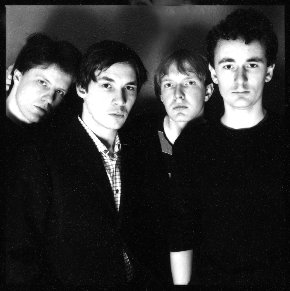
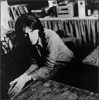

The News, Digested (16.02.2009)
Believe it or not, when No Ripcord began life in April 1999 its primary function was as a news source. We didn't do it particularly well, however, and as the site developed the emphasis soon shifted towards reviews and feature content.
When we relaunched the site in 2007, we opted to leave news coverage off our agenda; regular updates are available on a host of popular, frequently updated sites, after all, so why not leave it to them?
Well, that's what we thought until recently. Our writing team is now stronger than ever and we feel that we're in a position to offer you, the reader, more value from your visit to No Ripcord. Rather than daily factual news updates, we're going to provide a weekly news digest. Rather than just blandly reporting we'll be trying to cover the stories from our perspective, with opinion and humour where necessary. We hope you enjoy our news digests and that you find them useful as a one-stop shop for keeping in touch with current events in the worlds of music and film.
If you'd like to contribute or have a story you'd like us to cover, please get in touch (or comment below).
Miguel Morelli (News Editor) & David Coleman (Editor-In-Chief)
. . .
Sheffield Legends Reform for Sensoria festival
By David Coleman
The Comsat Angels are one of Sheffield's best kept secrets. Scratch that: they are Sheffield's best kept secret. A gloomy post-punk band who recorded their strongest material in the early-to-mid 1980s (and disbanded as relative unknowns in 1995), the Comsats are due a full-scale reappraisal and their reformation is a great coup for the Sheffield-based Sensoria festival, which is in its second year.
The rest of the festival program will be announced over the next few months. The Comsat Angels show takes place on April 26 at the O2 Academy, Sheffield, and the festival itself runs from 24–30 April.
Click here to see poet/author Simon Armitage and film critic Mark Kermode discussing the importance of the Comsat Angels.
. . .
Sony Leads Major Labels in Youtube Deal
By Miguel Morelli
Sony Music has renewed its agreement with Youtube, being the first of the four major record labels to allow its artists to continue to have videos hosted on the popular web site. User created videos can play Sony's music, though violation of the other labels still warrants removal of audio tracks from infringing videos.
After talks broke down between Warner Music and Youtube in January, videos began to get muted on the site, including band's official videos. Death Cab for Cutie had videos embedded on their official web site that were blocked with the message: "This video is no longer available due to a copyright claim by WMG". Ironically Warner Music is the band's own label. There is still no indication as to when the other labels will sign, but Sony's Outkast and Bruce Springsteen can now be legally listened to on Youtube. Universal is purportedly close to an agreement, which would leave EMI and Warner.
Licensing deals are the label's common solution to the 'free' Internet distribution problem, and have already struck deals with many other music hosting sites. With all the protectionism, we can only hope that we will continue to be able access music at all. [CNET]
. . .
Bernard Butler Wins British Producer Award
By Miguel Morelli
Bernard Butler has won the top prize at 2009's Music Producers' Guild Awards, having recently produced for recent albums by Duffy, Sharleen Spiteri, Black Kids and Tricky. Butler said "Pop music has currency that goes beyond lots of other art forms. If you can help lift somebody for three minutes out of a dreary existence then I think that's a major achievement."
At the same awards, Brian Eno collected the Music Producers' Guild (MPG) trophy, and said "It's actually a really big honour to be presented with a prize by your peers. Especially when there are so many of them in the room that you admire and whose work you follow."
The award for international producer of the year went to Danger Mouse, who produced for Gnarls Barkley, Gorillaz, Beck and Martina Topley-Bird. Calvin Harris, for his collaboration with Dizzee Rascal, won the prize for best remixer. Do producers get enough attention? Who were you cheering for? [Music Radar]
. . .
Justice Department Will Investigate Ticketmaster, Live Nation Merger
By Miguel Morelli
Live Nation Entertainment, the new fusion between live music giants Ticketmaster and Live Nation, will be investigated by the U.S. Department of Justice for possible antitrust violation.
The merger gets attention because it will reduce competition, resulting in higher ticket prices. The combined entity would control booking, promotion, primary ticket sales, secondary (scalped) ticket sales, merchandising, direct marketing and even album sales. Since these kinds of deals make it practically impossible for other ticketing companies to exist, the U.S. government could require that the company spin off Live Nation's new ticketing division, which would be enough to satisfy Washington that the market is competitive. But if the merger is going to be analyzed so much, why go through with it? Do they want more efficiency, or just a monopoly? [Wired]
. . .
16 February, 2009 - 20:32 — No Ripcord Staff